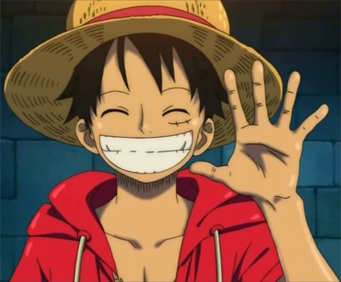

Monkey D. Luffy
Conocido como "Luffy Sombrero de Paja", es el capitán y fundador de los Piratas de Sombrero de Paja, así como uno de los Cuatro Emperadores (Yonkō) que gobiernan el Nuevo Mundo.
Historia y Unión
Nacido en la Villa Foosha en el East Blue, Luffy admiraba al pirata Shanks "El Pelirrojo". A la edad de 7 años, comió accidentalmente una Fruta del Diablo. Tras ser salvado de un Rey del Mar por Shanks (quien perdió su brazo izquierdo en el proceso), Shanks le entregó su característico sombrero de paja con la promesa de que se lo devolviera cuando fuera un gran pirata.
A los 17 años, zarpó al mar él solo en un pequeño bote. Es, por definición, el miembro fundador, uniéndose a sí mismo a la tripulación que estaba por crear.
Aspecto

Luffy es delgado pero musculoso. Su rasgo más característico es su sombrero de paja. Tiene una cicatriz con dos puntos debajo de su ojo izquierdo (que se hizo a sí mismo de niño) y una gran cicatriz en forma de "X" en el pecho, cortesía del almirante Akainu. Suele vestir chalecos desabotonados, pantalones cortos enrollados hasta la rodilla y sandalias.
Habilidades
- Fruta del Diablo: Comió la Hito Hito no Mi, modelo: Nika (originalmente conocida como Gomu Gomu no Mi), que convirtió su cuerpo en goma. Esto le permite estirarse a voluntad y le otorga resistencia a ataques contundentes y a la electricidad. Usa los "Gears" (Marchas) para potenciar su cuerpo.
- Haki: Es de los pocos en el mundo capaces de utilizar los tres tipos de Haki (Observación, Armadura y del Rey) en sus niveles más avanzados.
Monkey D. Luffy

Rol: Capitán
Apodo: Sombrero de Paja
Recompensa actual: 3.000.000.000 Berries
Lugar de origen: East Blue
Fruta del Diablo: Hito Hito no Mi, mod: Nika